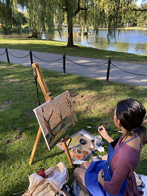

Home
Hello, my name is Leila Garner!
I am currently a student pursuing a BFA Graphic Design and Painting degree at School of Visual Arts at Boston University. I'm from Montgomery County, Maryland. My interests lie in all aspects, from formal studio arts to visual design. I interdisciplinarily explore nature, humanity, and atmosphere. In my spare time, I like to read novels, watch movies and TV shows and then secretly review them in my head. I am also unapologetically passionate about my dogs and theatre. One little fun fact about me is that I find trees and vintage cameras irresistible inspiration.